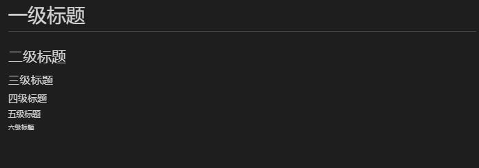

MarkDown介绍
Markdown 是一种轻量级标记语言，它允许人们使用易读易写的纯文本格式编写文档。
Markdown 编写的文档后缀为 .md, .markdown。
MarkDown编写
MarkDown标题
markdown使用#号来标记标题
使用 # 号可表示 1-6 级标题，一级标题对应一个 # 号，二级标题对应两个 # 号，以此类推。
1 | # 一级标题 |
效果如下图所示

markdown还可以使用
=和-标记一级和二级标题
1 | 一级标题 |
MarkDown格式
段落的换行
markdown段落的换行在上一行后加上两个以上的空格后再换行即可。
或者直接在两段中添加一个空行。
字体
markdown有以下几种字体：
1 | *斜体文本* |
分割线
你可以在一行中用三个以上的星号、减号、底线来建立一个分隔线，行内不能有其他东西。你也可以在星号或是减号中间插入空格。下面每种写法都可以建立分隔线：
1 | *** |
删除线
如果段落上的文字要添加删除线，只需要在文字的两端加上两个波浪线“~~”即可，实例如下：
1 | ~~删除的字~~ |
实现效果如下：
删除的字
MarkDown列表
有序列表
有序列表使用数字加上 . 号来表示
1 | 1. 第一项 |
无序列表
无序列表使用 *，-，+ 号来表示
1 | * 第一项 |
列表嵌套
1 | 1. 第一项： |
实现效果如下：
- 第一项：
- 第一项嵌套的第一个元素
- 第一项嵌套的第二个元素
- 第二项：
- 第二项嵌套的第一个元素
- 第二项嵌套的第二个元素
MarkDown区块
Markdown 区块引用是在段落开头使用 > 符号 ，然后后面紧跟一个空格符号：
1 | > 区块引用 |
显示效果如下：
区块引用
另外区块是可以嵌套的：
1 | > 最外层 |
显示效果如下：
最外层
第一层嵌套
第二层嵌套
并且区块和列表是可以互相嵌套的：
1 | > 区块中使用列表 |
显示效果如下：
区块中嵌套列表
- 第一项
- 第二项
- 第一项
- 第二项
- 第三项
- 第一项
列表中
嵌套区块 - 第二项
MarkDown代码
函数
可以使用反引号（`）包起一个函数或片段的代码：
1 | `scanf()`函数 |
显示效果如下：
scanf()函数
代码区块
markdown代码区块使用4个空格或者一个制表符（Tab）
也可以使用```包裹一段代码，并可以选择指定一种语言
MarkDown链接
链接使用方法如下：
1 | [链接名称](链接地址) |
显示效果如下：
使用引脚指向链接地址：
1 | 这个链接用 1 作为网址变量 [Google][1] |
显示效果如下：
这个链接用 1 作为网址变量 Google
这个链接用 ‘baidu’ 作为网址变量 Baidu
然后在文档的结尾为变量赋值（网址）
MarkDown图片
图片的语法格式如下：
1 |  |
Markdown 还没有办法指定图片的高度与宽度，如果你需要的话，你可以使用普通的 <img> 标签。
1 | <img src="url" width="50%"> |
MarkDown表格
Markdown 制作表格使用|来分隔不同的单元格，使用-来分隔表头和其他行。
语法格式如下：
1 | | 表头 | 表头 | |
以上代码显示结果如下：
| 表头 | 表头 |
|---|---|
| 单元格 | 单元格 |
| 单元格 | 单元格 |
我们可以设置表格的对齐方式：
-:设置内容和标题栏居右对齐。
:-设置内容和标题栏居左对齐。
:-:设置内容和标题栏居中对齐。
1 | | 左对齐 | 右对齐 | 居中对齐 | |
显示效果如下：
| 左对齐 | 右对齐 | 居中对齐 |
|---|---|---|
| 单元格 | 单元格 | 单元格 |
| 单元格 | 单元格 | 单元格 |
MarkDown Html元素
不在 Markdown 涵盖范围之内的标签，都可以直接在文档里面用 HTML 撰写。
目前支持的 HTML 元素有：<kbd> <b> <i> <em> <sup> <sub> <br>等 ，如：
1 | 使用 <kbd>Ctrl</kbd>+<kbd>Alt</kbd>+<kbd>Del</kbd> 打开任务管理器 |
显示结果为：
使用 Ctrl+Alt+Del 打开任务管理器
MarkDown转义
Markdown 使用了很多特殊符号来表示特定的意义，如果需要显示特定的符号则需要使用转义字符，Markdown 使用反斜杠转义特殊字符：
1 | **文本加粗** |
显示效果如下：
文本加粗
** 正常显示星号 **
Markdown 支持以下这些符号前面加上反斜杠来帮助插入普通的符号：
2
3
4
5
6
7
8
9
10
11
12
` 反引号
* 星号
_ 下划线
{} 花括号
[] 方括号
() 小括号
# 井字号
+ 加号
- 减号
. 英文句点
! 感叹号
MarkDown公式
当你需要在编辑器中插入数学公式时，可以使用两个美元符 $$ 包裹 TeX 或 LaTeX 格式的数学公式来实现。提交后，问答和文章页会根据需要加载 Mathjax 对数学公式进行渲染。如：
1 | $$ |
显示效果如下：
$$
\mathbf{V}_1 \times \mathbf{V}_2 = \begin{vmatrix}
\mathbf{i} & \mathbf{j} & \mathbf{k} \
\frac{\partial X}{\partial u} & \frac{\partial Y}{\partial > u} & 0 \
\frac{\partial X}{\partial v} & \frac{\partial Y}{\partial > v} & 0 \
\end{vmatrix}
${$tep1}{\style{visibility:hidden}{(x+1)(x+1)}}
$$
如果您喜欢此博客或发现它对您有用，则欢迎对此发表评论。 也欢迎您共享此博客，以便更多人可以参与。 如果博客中使用的图像侵犯了您的版权，请与作者联系以将其删除。 谢谢 ！